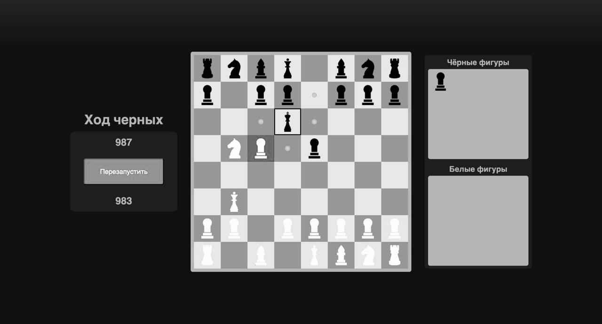
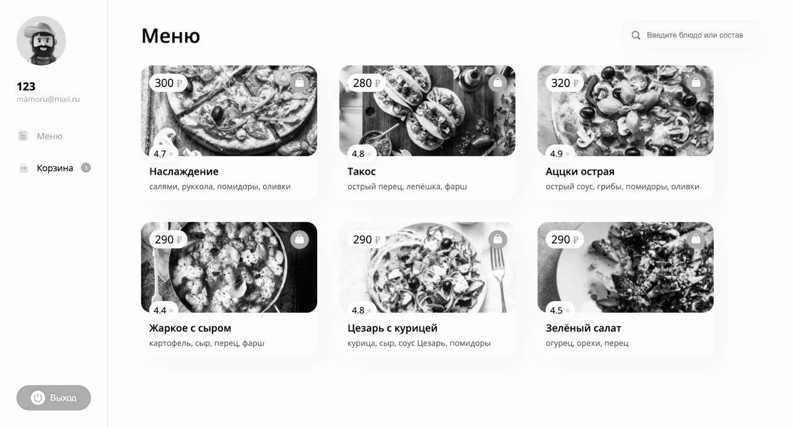
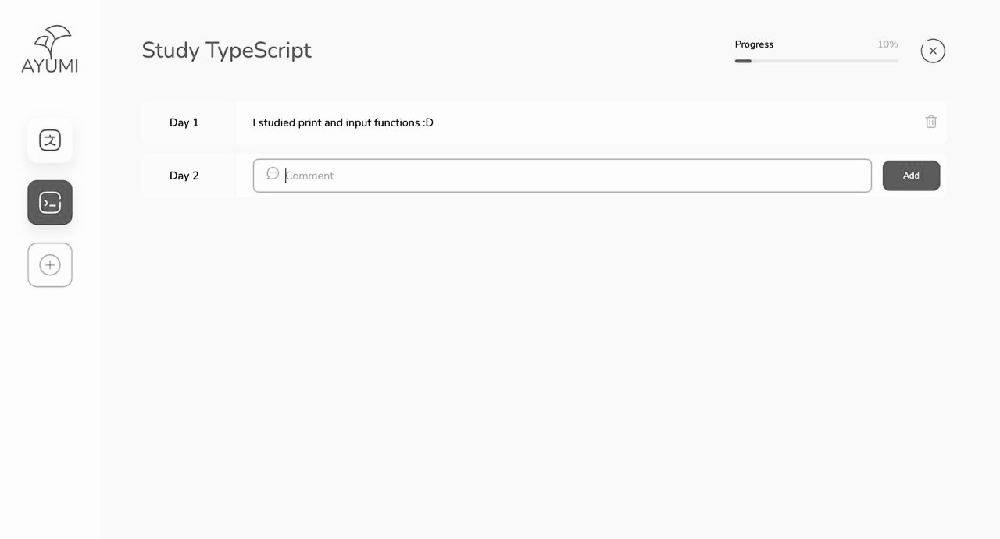
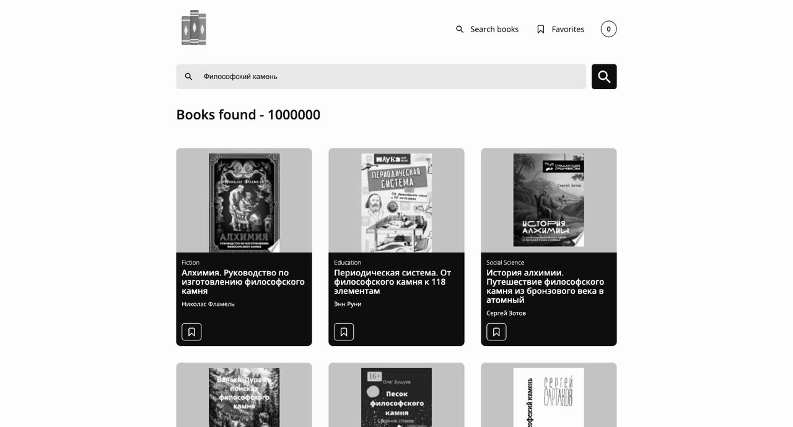

Mamoru-Dev
FULLSTACK
WEB DEVELOPER
Web Developer with 2 years of experience in developing and
optimizing
high-load web applications and interfaces.
Specialize in JavaScript and TypeScript combined with the React library for frontend development and NestJS for
backend solutions. Additionally, proficient in backend development using Go (Golang), including building
scalable
APIs and working with concurrent data processing. Experienced in designing and optimizing relational databases
using
SQL, writing complex queries, and ensuring efficient data access. Responsible and results-driven, skilled at
effective teamwork, quick to adapt to new technologies, and always eager to improve my skills and deliver
high-quality solutions.
ALEKSANDR
CHERNAKOV
Skills


PROJECTS




Chess Online
A real-time multiplayer chess platform with a polished UI and smooth game logic. Built as a frontend-only prototype focused on clean design and performance.
TypeScriptReactWebpack
Food Delivery App
A responsive and animated food delivery web app, simulating a real service. Features include dynamic menus, filtering, and cart functionality.
ReactTypeScriptWebpack
Habit Tracker
A simple yet effective tool to track daily habits and progress. Offers a visual tracker and reminders to help users stay consistent.
JavaScriptHTMLCSS
Book Finder
A SPA for searching and exploring books via the Google Books API. Includes pagination, error handling, and search history.
JavaScriptHTMLCSSRollup